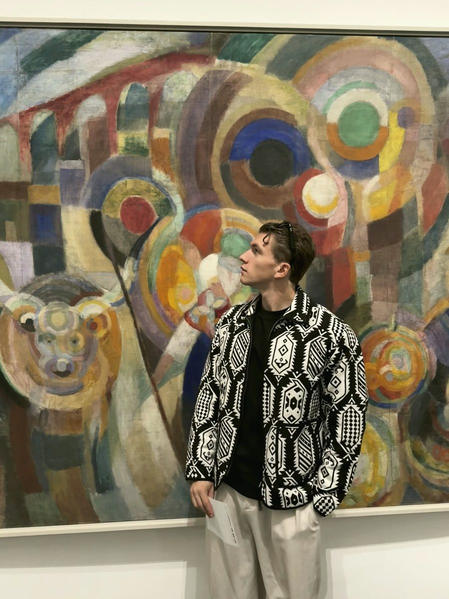

Orléans
William San is 22 and paints in Orléans, France. After business school (Bachelor, Excelia Orléans, 2022–2025), he chose painting, and since January 2026 he has devoted himself to it full time.
A 22-year-old painter from Orléans, France. Two signatures born of Japanese art.

William San is 22 and paints in Orléans, France. After business school (Bachelor, Excelia Orléans, 2022–2025), he chose painting, and since January 2026 he has devoted himself to it full time.
Painting came to him from his father, the painter Le Yack. Trained at the Beaux-Arts in Orléans and once an art director in publishing, Le Yack paints suspended moments, cinematic scenes in the line of Edward Hopper, where light tells the story. Light has stayed in the family: William San turned it towards the images of Japan.
With his father and his brother, Neo Pablo, who is starting out in gestural abstraction, he created Atelier Joconde: a family of artists, three painters and three signatures, based at LAB’O in Orléans. Their family gallery, atelierjoconde.com, shows and sells their originals. In 2026, the studio exhibited at the art3f fairs in Nantes, Monaco and Luxembourg.
Japanese woodblock prints chose the surface: flat colour, clean outlines, almost never a cast shadow. Under his two signatures, William San gives that image a depth it never sought.
Popsan is light within shadow. A lantern, a moon, a bowl of water draw the faces of Japanese women out of the dark, as in Georges de La Tour. Tanizaki’s In Praise of Shadows had already placed Japanese beauty in the half-light.
Medsan is the art of medicine: a brain of Imari porcelain, an eye turned into a koi pond, a jaw caught in Hokusai’s waves. The wager is to make the human body beautiful.
Shadow and anatomy met once before, in 1774, in the Kaitai Shinsho, the first Western book translated in full in Japan. Its anatomical plates were drawn by a painter, Odano Naotake, who had just learned European shading and perspective.
Popsan finds light in the shadow; Medsan turns medicine into art.
Message sent.
William San will reply by email.